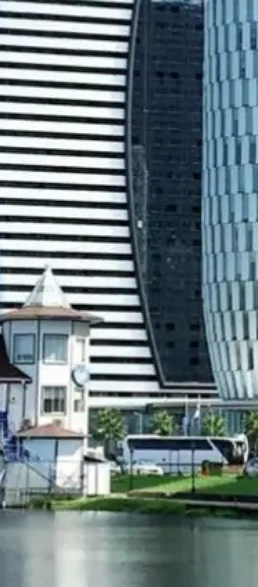
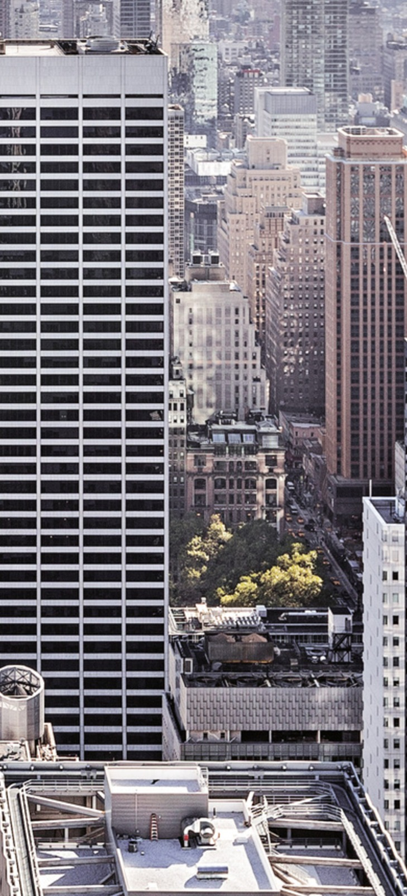
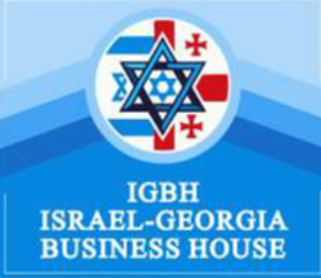
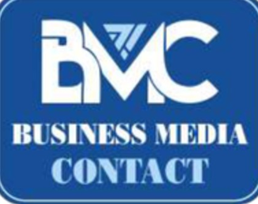

02
Israel-Georgia Real Estate and Business Tourism Forum
Номинанты от бизнеса и государства
Номинанты от бизнеса и государства




BUSINESS GOVERNMENT CONTACT


Israel-Georgia Real Estate and Business Tourism Forum
Номинанты от бизнеса и государства
Israel-Georgia Real Estate and Business Tourism Forum
21 декабря 2026 года в отеле «Pullman Tbilisi Axis Towers» состоится ежегодная церемония награждения успешных государственных, бизнес- и медиапроектов Business Government Contact «BGC International» и Israel Georgia Business Forum. Ежегодным организатором выступает «Business Media Contact BMC», международный бизнес-медиа-холдинг, занимающийся продвижением развития грузинского бизнеса, брендингом страны и повышением узнаваемости делового климата Грузии на международном рынке. Организация содействует грузинским компаниям в установлении связей с международными партнёрами, инвесторами и целевой аудиторией.
Организатором форума и церемонии награждения этого года также является «Israel Georgia Business House»(IGBH), который продвигает грузинскую недвижимость, деловой и бизнес-туризм по всем направлениям на рынке Израиля и способствует развитию торгово-экономических отношений между двумя странами. Кроме того, IGBH предоставляет грузинским и международным компаниям услуги маркетинга, управления продажами, полного юридического сопровождения и PR для углубления и развития инвестиционных, брокерских и деловых туристических связей.
IGBH и BMC ежегодно продвигают грузинский бизнес в международном медиаформате через международные партнёрские медиаканалы Национальной администрации туризма Грузии.
Так же в этом году BMC и IGBH представят грузинский рынок на международной арене в странах Европы , Америке, СНГ, ОАЕ ..


Israel-Georgia Real Estate and Business Tourism Forum
Цель Israel Georgia Business Forum и церемонии награждения BGC International
1. Продвижение грузинского бизнеса, делового туризма, инвестиционного и торгово-экономического потенциала, а также успешного бизнес-климата. Кроме того, продвижение государственных проектов, которые создали привлекательную для инвесторов деловую среду и способствовали выходу Грузии на международный рынок.
Также форум направлен на содействие интеграции грузинских компаний на израильский рынок, привлечение международных бизнес-партнёров и инвесторов, обеспечение полной цепочки маркетинга и управления продажами при управлении инвестиционными портфелями для грузинских и международных компаний, а также проведение комплексного исследования и аналитики инвестиционного потенциала рынка страны.


Israel-Georgia Real Estate and Business Tourism Forum
2 В первой части форума примут участие ведущие высокопоставленные специалисты и компании в сфере недвижимости и делового туризма, представленные на израильском и международных рынках: брокеры, риелторы, инвесторы, туристические компании, организующие деловые и бизнес-туры, а также импортёры и экспортёры.
Со стороны Грузии в форуме примут участие ведущие строительные и девелоперские компании, архитектурные и инженерные компании, производители строительных материалов, представители компаний недвижимости, брокеры и риелторы, аналитики и эксперты по экономике Грузии, банки, инвестиционные фонды, страховые компании. Так же будут приглашены принять участие представители делового туризма представляющего интерес для израильского рынка: медицинский туризм, Eco, Wellness, и болнеологические курорты, винный туризм и огро туризм. представители действующих в Грузии посольств и международных торговых палат, поддерживающих государственных ведомств, а также международные бизнесс ассоциации.


Israel-Georgia Real Estate and Business Tourism Forum
В рамках бизнес-форума состоятся Business Expo, Welcome Party, Workshop, Global Networking Relationship, B2B- и B2C-встречи с целевой аудиторией и брокерские туры. Будут представлены рекламные и демонстрационные зоны компаний-участников с баннерами, флаерами и аксессуарами. Компании смогут провести бизнес-презентации с показом рекламных роликов и пресс-релизов, а также представить себя в формате интервью ведущим грузинским и израильским СМИ
В рамках форума будут представлены направления делового туризма, представляющие интерес для израильского рынка: медицинский туризм, Wellness, Eco- и бальнеологический туризм, винный и агротуризм.
Israel-Georgia Real Estate and Business Tourism Forum
Во второй части мероприятия состоится церемония награждения Business Government Contact BGC International, посвящённая успешным государственным и бизнес-проектам, компаниям-лидерам, инвестиционным проектам, международным торговым палатам, международным импортёрам и экспортёрам, представителям всех направлений делового туризма и ведущим медианоминантам. Будут представлены промо-видеоролики компаний и имиджевые проекты. Сюжеты и программы об участниках форума, подготовленные в грузинском медиапространстве, будут переведены на английский, русский и иврит, переданы международным медиапартнёрам и размещены на каналах международных туристических агентств и агентств недвижимости. Запись церемонии награждения и форума будет транслироваться в международных СМИ Грузии и Израиля.


Israel-Georgia Real Estate and Business Tourism Forum
В рамках форума награждение будет проводиться по номинациям без определения компании-победителя, поскольку каждый участник-номинант отбирается и выдвигается на награду за вклад в развитие своего сегмента, внедрение инноваций и технологий, а также как представитель отрасли с высокими стандартами и профессионализмом.
Вклад в строительство и развитие страны
Внедрение новых технологий и инноваций
Вклад в развитие бизнес-сектора
Крупный инвестиционный проект
Проект с инвестиционным потенциалом, привлекательный для инвесторов, и продукт, востребованный на международном рынке.
Масштабный многофункциональный и инфраструктурный проект
Вклад в развитие посредством внедрения устойчивых, энергоэффективных проектов и проектов «зелёной» экономики.
Общественное доверие, репутация и высокий профессионализм.
Israel-Georgia Real Estate and Business Tourism Forum
Масштабный рост и развитие (завершённые, текущие и будущие проекты)
Вклад в формирование имиджа Грузии и её популяризацию за пределами страны.
Международная реклама и повышение узнаваемости на международном рынке.
Успешный государственный проект, способствовавший развитию бизнеса Грузии и международных торгово-экономических отношений.
Успешный медиапроект, способствовавший продвижению бизнеса.
Вклад в развитие международного делового и бизнес-туризма.
Israel-Georgia Real Estate and Business Tourism Forum
Телекомпания Imedi, Rustavi 2, Первый канал Общественного вещателя, Palitra TV, TV Pirveli, Post TV, Starvision, радиохолдинг Fortuna, Euronews Georgia, Formula, 9-й и 14-й каналы Израиля, международный медиахолдинг «Частное Мнение», ITON TV, GTV, радио «Кэн Река»

ВИДЕО · 03:10
Israel-Georgia Real Estate and Business Tourism Forum